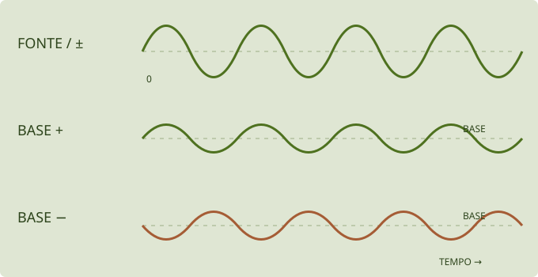
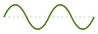
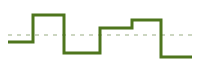

Modulação na prática · patches ilustrados
English · Manual principal · Mapa das telas e módulos
Modular é deixar uma fonte movimentar um ajuste. A fonte pode ser uma oscilação, um envelope, uma sequência ou o gesto de uma pessoa. Aqui vamos construir uma relação por vez, perceber sua contribuição e depois combinar movimentos.
ALFA · receitas de estudo. São instruções para montar patches, não arquivos de preset ou demonstrações de áudio já validadas. Os desenhos explicam relações; não são capturas da interface nem medições do motor. Os pontos de partida sugeridos devem ser ajustados ao timbre e à versão usada.
Escolha uma experiência
| Quero explorar… | Receita |
|---|---|
| Movimento contínuo | Um filtro que respira |
| Resposta à força de cada nota | FM que muda com a velocidade |
| Uma transformação que começa a cada nota | Uma abertura percussiva |
| Variação menos repetitiva | Metal que se transforma devagar |
| Vários destinos com um gesto | Uma macro de aproximação |
| Movimento sob controle da roda | A roda libera o movimento |
| Expressão diferente em cada nota | Pressão e timbre por MPE |
Antes de criar uma rota
Salve o timbre atual. Escolha INIT para um começo conhecido ou use um preset seu e anote suas rotas existentes. Comece com volume moderado. Primeiro confira que uma nota soa e termina como esperado; depois acrescente movimento.
Nesta documentação, patch é o conjunto de ajustes do som. Rota é uma ligação de modulação. Um patch pode conter várias rotas e nenhuma sequência de notas.
Para observar alterações de filtro, uma onda com harmônicos, como SAW HD, costuma revelar melhor o recorte que uma senoide isolada. Para estudar FM, use uma ligação simples de OP2 para OP1, como no exemplo USER. Outras ligações e saídas diretas podem alterar o resultado das receitas.
Criar, ajustar e remover na interface
- Encontre o destino. Para CUTOFF: SYNTH → FILTER / EG2 / OUTPUT. Para LEVEL de OP2: selecione OP2 na visão geral e abra OPERATOR.
- Crie a ligação. Use o + junto ao controle e escolha a fonte. A interface também oferece arrastar uma fonte até o destino.
- Ajuste a quantidade no mini knob da rota. Arrastar verticalmente muda sua profundidade e sinal. Confira o nome da fonte; a cor sozinha não identifica a ligação com segurança.
- Edite a fonte em MOD. Escolha a família, depois o módulo correto: LFO 1 não é LFO 2; ENV 1 não é o envelope próprio de OP1.
- Compare. Leve temporariamente a quantidade a zero e retorne ao valor escolhido. Isso isola a contribuição da rota sem precisar apagá-la.
- Para desfazer a ligação, use a opção de remoção da rota. Quantidade zero e remoção são estados diferentes.
As janelas, menus e espaços disponíveis variam entre plugin e web/APK. Na web/APK, o gráfico do destino e a lista de rotas também ajudam a conferir o estado. Essas instruções não pressupõem que uma apresentação visual específica já esteja disponível em todas as edições.
Base, movimento e profundidade
O knob grande é o valor de base. O mini knob diz quanto uma fonte pode deslocar esse valor. SPEED pertence à fonte e escolhe a rapidez do movimento. São três decisões independentes.

Exemplo conceitual. A linha tracejada representa a base; as curvas não usam escala de frequência, volume ou tempo do instrumento.
- Fonte bipolar: pode ficar acima e abaixo de zero. Uma rota positiva pode levar o destino para ambos os lados da base.
- Fonte unipolar: percorre um lado de zero. Uma rota positiva desloca para um lado; negativa desloca para o outro.
- Quantidade negativa inverte a influência da fonte; não transforma obrigatoriamente seu desenho em uma forma diferente.
- Limites do destino: perto do máximo ou mínimo, parte do movimento pode ficar limitada. Aumentar profundidade pode então parecer produzir pouco efeito.
No motor atual, a quantidade representa uma parcela da faixa do destino. +10% de rota não significa +10 Hz, +10 dB ou mais 10% do valor mostrado. O resultado depende da escala e dos limites daquele parâmetro. Por isso, comece com profundidade pequena e confira o valor e o resultado.
Patch 1: um filtro que respira
Intenção: abrir e fechar o brilho de forma contínua, sem precisar mover o controle o tempo todo.
Ponto de partida: um operador ouvido diretamente, onda SAW HD, nota sustentada e filtro ligado em LPF 12 ou LPF 24. Deixe RESO baixa. Coloque CUTOFF numa região em que fechar e abrir produza diferença. Para isolar o LFO, deixe EG2 INT em zero e confira que outras rotas não estão movendo o mesmo destino.

SIN ou TRI · lentoAbra a fonte: SYNTH → MOD → LFO → LFO 1.
Crie a rota: SYNTH → FILTER / EG2 / OUTPUT → CUTOFF → +.
- Em MOD → LFO, escolha LFO 1, forma SIN ou TRI e movimento lento. Para começar, FREE em torno de 0,5 Hz, se oferecido na edição, faz um ciclo levar aproximadamente dois segundos.
- No CUTOFF, adicione LFO 1. Comece com quantidade positiva pequena, por exemplo +5% da faixa.
- Sustente uma nota e acompanhe o desenho do LFO. Compare quantidade zero, pequena e maior.
- Inverta a quantidade para ouvir/observar a direção contrária. Depois altere SPEED sem alterar a quantidade.
O que observar: a velocidade muda a frequência do abrir/fechar; a profundidade muda sua extensão. Se o filtro parecer estacionar nas pontas, reduza a quantidade ou afaste a base de seus limites. Se o envelope do operador terminar rápido, segurar a tecla pode não fornecer um som contínuo para a experiência.
Variação: escolha uma divisão de SYNC quando disponível. O movimento passa a se relacionar ao andamento; no plugin, o transporte e o tempo vêm do host. Não deduza sincronismo apenas porque um controlador MIDI está conectado.
Patch 2: FM que muda com a velocidade
Intenção: fazer a força de cada nota mudar a transformação de FM, além de seu volume.
Ponto de partida: USER com OP2 → OP1, somente OP1 em OUT. Ambos em FM/SIN, razões x1 ou x2; OP1 com nível confortável e OP2 com nível baixo, mas audível em sua influência. Confira os envelopes dos dois. Salve antes de limpar ligações de um patch existente.
Duas ligações diferentes: VELOCITY → LEVEL é uma rota de parâmetro. OP2 → OP1 é uma ligação de áudio do algoritmo. A primeira movimenta a força da segunda.
- Selecione OP2, abra OPERATOR e localize LEVEL.
- No + de LEVEL, escolha VELOCITY e comece com uma profundidade positiva pequena.
- Toque a mesma nota com forças diferentes em um teclado/controlador que envie velocity, ou use a configuração de velocidade oferecida pela edição.
- Compare a rota em zero e ativa. Depois compare com uma rota de VELOCITY para LEVEL de OP1.
O que observar: sobre OP2, a velocidade altera a intensidade da modulação enviada a OP1. Sobre OP1, altera principalmente sua contribuição direta. A percepção de volume também pode mudar no primeiro caso; não são efeitos completamente independentes.
Importante: o controle dedicado VEL do operador também pode alterar sua resposta à velocidade. Para estudar só a rota, comece com esse controle em zero. Um controlador com velocity fixa não produzirá a comparação entre toques leves e fortes.
Patch 3: uma abertura percussiva
Intenção: o filtro abre no começo de cada nota e volta a fechar, mesmo com a tecla ainda pressionada.
Ponto de partida: a mesma onda rica em harmônicos, filtro ligado, CUTOFF mais fechado e EG2 INT em zero. O envelope de amplitude do operador deve permitir duração suficiente para perceber o movimento do filtro.
O envelope inicia o movimento. O som precisa durar tempo suficiente para revelar seu decaimento. O nível sustentado da fonte pode ser zero mesmo quando o operador continua soando.
- Em MOD → ENVELOPES, escolha ENV 1. Aqui estamos usando uma fonte de modulação, não o envelope próprio do operador.
- Comece em ADSR: ATTACK curto, DECAY visível, SUSTAIN em zero e RELEASE curto. Como referência de gesto, experimente decay de algumas centenas de milissegundos conforme o valor exibido.
- Crie ENV 1 → CUTOFF, com quantidade positiva pequena.
- Toque notas separadas e depois sustente uma. Confira que o desenho do envelope retorna ao nível de sustain escolhido.
O que observar: cada nota inicia uma trajetória. Diferentemente de um LFO livre, esse gesto tem relação com o início e a duração da nota. ATTACK maior transforma a abertura imediata em crescimento gradual.
Outra forma de chegar lá: o filtro já oferece EG2 INT para aplicar seu envelope dedicado. Use esse caminho ou a rota da receita para começar; usar ambos sem perceber soma influências e dificulta entender a origem do movimento.
Patch 4: metal que se transforma devagar
Intenção: variar a intensidade da transformação sem repetir sempre a mesma curva.
Ponto de partida: OP2 modulando OP1, com uma relação não inteira se quiser explorar uma estrutura metálica. Deixe OP2 longe dos extremos de LEVEL, pois a variação pode subir e descer em torno da base.

SAMPLE & HOLDRISE/FALL pertencem à fonte RAND: suavizam o sinal que ela entrega às suas rotas. A profundidade continua sendo ajustada no mini knob de cada destino.
- Em MOD → RANDOM, escolha RAND 1 → SAMPLE & HOLD.
- Use uma velocidade baixa, para distinguir um valor do seguinte.
- Ligue RAND 1 → OP2.LEVEL com profundidade pequena.
- Primeiro deixe RISE/FALL curtos para perceber os patamares. Depois aumente ambos e compare a transição entre os mesmos tipos de evento.
O que observar: SPEED escolhe quando novos alvos aparecem; RISE e FALL escolhem como subir e descer até eles. Uma transição muito longa pode não alcançar o alvo antes do sorteio seguinte. Isso é diferente de simplesmente diminuir SPEED.
Variação: RANDOM LOOP guarda uma sequência que retorna. LENGTH define seu comprimento; FLIP controla a chance de substituir valores quando o laço volta. Com FLIP em zero, o padrão existente se repete, em vez de ser renovado a cada volta.
Patch 5: uma macro de aproximação
Intenção: um gesto abre o filtro e aumenta a participação dos efeitos.
Ponto de partida: um timbre que responde ao filtro, um DELAY colocado e ligado em FX A, e ROOM colocado e ligado no AUX. Confira que SEND e RETURN permitem ouvir o AUX. Uma rota para um efeito ausente ou desligado não cria esse efeito.
Cada seta tem seu próprio mini knob de quantidade. A macro reúne os movimentos; os efeitos precisam existir, estar ligados e ter seu caminho audível.
- Coloque MACRO 1 no centro/zero e mantenha seus destinos longe dos limites.
- Crie três rotas: MACRO 1 → CUTOFF; MACRO 1 → MIX do DELAY; MACRO 1 → AUX SEND.
- Use profundidades positivas pequenas. Ajuste uma rota por vez; o filtro e os efeitos não têm a mesma escala de resposta.
- Mova a macro para os dois lados. Depois mantenha apenas o lado que combina com seu gesto de performance.
O que observar: a macro não escolhe um preset novo. Ela desloca vários destinos do patch atual. Como as macros são fontes bipolares, mover para o lado negativo pode fechar/reduzir os mesmos destinos, respeitando seus limites.
Na PLAY: os instantâneos A–D guardam posições das quatro macros. Com esta receita, guardar duas posições de Macro 1 permite transitar entre duas intensidades do gesto. Isso ainda não é morph entre presets completos.
Patch 6: a roda libera o movimento
Intenção: o LFO só passa a ter influência quando a roda de modulação é movida.
Ponto de partida: um filtro que já responde ao teste do patch 1 e uma roda que envie CC1. Não use simultaneamente a rota direta LFO 1 → CUTOFF da primeira receita, para poder isolar o combinador.
Roda em zero: esta contribuição é zero. Roda no alto: o LFO participa com a profundidade escolhida. O produto puro vale para AMOUNT +100%.
- Em MOD → COMBINATE, selecione COMB 1 e tipo MULTIPLY.
- Escolha SOURCE = LFO 1, MOD = MOD WHEEL e AMOUNT = +1 / +100%, conforme a apresentação da edição.
- Crie COMB 1 → CUTOFF, com profundidade pequena.
- Compare a roda em zero, no meio e no alto. Mantenha SPEED do LFO constante.
Nesse ajuste específico, MULTIPLY faz o resultado corresponder a LFO × roda: roda em zero elimina essa contribuição; no meio, reduz; no alto, permite a extensão escolhida. Em outros valores de AMOUNT, esse combinador mistura influência e não deve ser entendido como um multiplicador puro.
O que observar: a roda controla a extensão do movimento, não sua velocidade. Se o corte se mover com a roda em zero, procure uma rota direta adicional ou outra fonte no mesmo destino.
Patch 7: pressão e timbre por MPE
Intenção: modificar notas sustentadas separadamente, quando o controlador e o destino oferecem expressão por nota.
Onde: no plugin, MOD → KEYBOARD → MPE INPUT → LOWER ZONE / CH 1 MASTER. Os canais 2–16 carregam expressão por nota; o canal 1 é mestre. NOTE BEND deve corresponder ao alcance enviado pelo controlador.
| Mensagem | Rota de estudo | Resultado a observar |
|---|---|---|
| Pressão | AFTERTOUCH → CUTOFF | A pressão de uma nota modifica seu filtro |
| Timbre | TIMBRE (CC74) → OP2.LEVEL | O gesto de timbre modifica a transformação daquela nota |
| Bend | Alcance de NOTE BEND | A altura acompanha o gesto por nota; não é necessário criar uma rota de filtro para isso |
Comece com uma nota e uma rota; depois compare duas notas simultâneas com gestos diferentes. Não use um efeito compartilhado como prova de independência por nota. Se o controlador enviar apenas expressão de canal, o comportamento não equivale a MPE por dedo.
Esta receita exige dispositivo, transporte e roteamento compatíveis. Os gestos do celular dependem da edição do controlador; pressão, altura do toque e CC74 não devem ser presumidos como o mesmo eixo. Nenhuma validação física adicional foi realizada para este guia.
Duas fontes no mesmo destino
Uma combinação comum é ENV 1 → CUTOFF para a trajetória da nota e LFO 1 → CUTOFF para movimento contínuo. Cada rota tem sua quantidade. O knob grande continua sendo a base.
- Ajuste primeiro ENV 1 e deixe a rota de LFO em zero.
- Acrescente o LFO aos poucos.
- Compare uma nota recém-iniciada com uma sustentada.
- Se o destino ficar preso em um extremo, reduza as profundidades ou mude a base.
Não espere que duas fontes percorram independentemente uma faixa ilimitada. Elas se combinam no destino, que tem limites. Retirar uma rota não retira a outra.
Por nota, contínuo ou compartilhado?
- Velocity vem do início de cada nota. Uma nova pressão sobre a tecla não muda a velocity daquela nota; aftertouch é outro tipo de mensagem.
- Envelopes de voz acompanham eventos de nota. O envelope de OP2 e ENV 1 são fontes/processos distintos.
- LFOs podem ter comportamento livre ou redisparado conforme sua configuração. Trocar de forma não decide sozinho se há reset por nota.
- RAND pode manter um processo global; não presuma um sorteio exclusivo por dedo.
- Efeitos e barramentos são compartilhados pela instância. Uma fonte por nota aplicada a esses controles não transforma o efeito em seis efeitos independentes.
- MPE transporta expressão por nota, mas o destino precisa respeitar esse escopo. Um único macro global não se torna individual por nota apenas por receber MIDI.
Se o resultado não aparecer
| Sintoma | Confira primeiro |
|---|---|
| Nenhum movimento | Rota criada, quantidade diferente de zero e fonte ativa |
| Gráfico se move, mas o som não | Destino ligado, operador participante, efeito no slot e mistura audível |
| Só uma parte da oscilação aparece | Base perto do limite e profundidade excessiva |
| A nota termina antes do movimento | Envelope de amplitude, gate e duração da nota |
| Toques diferentes dão o mesmo resultado | Velocity fixa, curva do controlador ou outra ligação dedicada |
| A roda em zero ainda deixa o LFO agir | Rota direta adicional, valor recebido da roda e configuração do COMB |
| Várias notas mudam juntas | Fonte global, mensagem de canal ou destino compartilhado |
| O som muda mais do que eu esperava | Mais de uma rota, EG2 INT ou VEL dedicados, macros e outras ligações já ativas |
Salve cada etapa com um nome que descreva o gesto. Para relatar uma dúvida, informe o destino, a fonte, a quantidade e o que já estava ativo. Uma imagem do destino com seus mini knobs e outra da página da fonte costuma mostrar mais que uma captura da tela inteira.